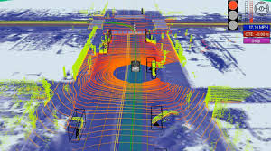
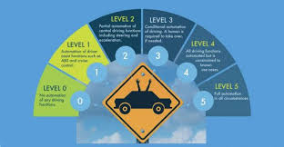
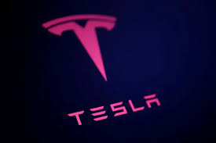
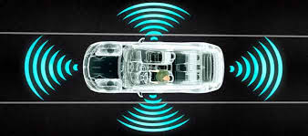

Los autos autónomos representan el salto tecnológico más disruptivo de la industria automotriz moderna.
Estos vehículos operan mediante un complejo ecosistema de hardware y software que reemplaza la intuición humana.
El corazón de este sistema es la Inteligencia Artificial, que actúa como un conductor virtual incansable.
Para que un coche pueda "ver", utiliza una técnica llamada fusión de sensores, combinando diversas fuentes.
El sensor LiDAR emite miles de pulsos láser por segundo para crear un mapa tridimensional del entorno inmediato.
Los radares complementan esta visión detectando objetos en movimiento bajo condiciones de lluvia o niebla densa.
Las cámaras de alta resolución analizan el color de los semáforos y leen las señales de tránsito en tiempo real.
Toda esta información es procesada por unidades de cómputo de alto rendimiento capaces de realizar billones de cálculos.
Los algoritmos de aprendizaje profundo permiten al vehículo identificar si un objeto es un peatón o un ciclista.
La escala de la SAE define la evolución de esta autonomía, comenzando desde el Nivel 0 sin automatización alguna.
En el Nivel 1 y 2, el conductor sigue siendo responsable, contando solo con asistencias como el control de crucero.
El Nivel 3 permite al conductor retirar las manos, pero debe estar listo para intervenir ante una emergencia.
El Nivel 4 es donde la verdadera revolución ocurre, permitiendo que el auto opere sin humanos en zonas específicas.
Finalmente, el Nivel 5 elimina por completo la necesidad de pedales, volante y cualquier intervención del pasajero.
Uno de los mayores beneficios de esta tecnología es la optimización del flujo vehicular y la reducción del tráfico.
Al comunicarse entre sí mediante sistemas V2V (Vehicle-to-Vehicle), los autos pueden coordinar sus movimientos.
Esto permite que los vehículos viajen a distancias más cortas entre sí, aprovechando mejor el espacio en las rutas.
Además, la conducción autónoma promete democratizar el transporte para personas con discapacidades o ancianos.
Sin embargo, el desarrollo no está libre de desafíos éticos, como la toma de decisiones en situaciones críticas.
Los ingenieros deben programar cómo debe actuar el auto ante un choque inevitable para minimizar los daños.
La ciberseguridad es otro pilar crítico, ya que al ser computadoras conectadas, son vulnerables a ataques externos.<
Las empresas líderes como Waymo, Tesla y Cruise invierten miles de millones de dólares en perfeccionar estos sistemas.
La transición hacia un mundo autónomo también implica cambios profundos en las leyes y los seguros vehiculares.
Se espera que para la próxima década, los robotaxis sean una vista común en las principales ciudades del mundo.<
La eficiencia energética es otro punto a favor, ya que la IA conduce de forma mucho más suave que un humano.
Esto reduce el consumo de energía y el desgaste de los componentes mecánicos como frenos y neumáticos.
A largo plazo, la propiedad privada de autos podría disminuir en favor de servicios de transporte por suscripción.
La infraestructura urbana también deberá adaptarse, instalando sensores inteligentes en semáforos y carreteras.<
En conclusión, el auto autónomo no es solo un medio de transporte, sino una plataforma de servicios digitales.
Estamos presenciando el fin de la era del error humano al volante para dar paso a la era de la precisión robótica.
Cada kilómetro recorrido por estos autos alimenta bases de datos globales que mejoran la seguridad de todos.
El camino hacia la autonomía total es largo, pero los cimientos tecnológicos ya están transformando nuestra realidad.
Este avance redefinirá no solo cómo nos movemos, sino cómo diseñamos nuestras ciudades y nuestra vida diaria.
La integración de redes 5G será fundamental para que la latencia en la toma de decisiones sea prácticamente nula.
El futuro de la movilidad es eléctrico, compartido y, sobre todo, completamente autónomo e inteligente.
Los camiones autónomos ya recorren autopistas de Estados Unidos sin conductor a bordo en pruebas reguladas.
Los robots de entrega de última milla operan en cientos de ciudades llevando paquetes y medicamentos.
La convergencia entre el vehículo autónomo terrestre, los drones y las ciudades inteligentes apunta a una
transformación total de la logística y la movilidad urbana en los próximos veinte años.
El ser humano del siglo XXI será el primero en la historia en no necesitar saber conducir para desplazarse.
Pasa el cursor sobre cada tarjeta para ver más información

LiDAR
Emite miles de pulsos láser por segundo para crear un mapa 3D del entorno.
Precisión menor a 2 cm. Opera perfectamente de noche y sin luz solar.
LiDAR — Sensor Principal

Niveles SAE
Del Nivel 0 (sin automatización) al Nivel 5 (autonomía total).
Solo Mercedes certifica Nivel 3 en vía pública. Waymo opera en Nivel 4.
Escala SAE — 6 Niveles

Tesla FSD
Full Self-Driving usa solo 8 cámaras y el chip HW4 (2,500 FPS).
Entrenado con la supercomputadora Dojo usando datos de millones de vehículos.
Tesla — Vision Only Stack
Waymo One
5 LiDAR + 29 cámaras + radares 77 GHz. Opera sin conductor en
San Francisco, Phoenix y Los Ángeles. Nivel 4 certificado.
Waymo — Robotaxi Nivel 4

Radar 77 GHz
Detecta velocidad y distancia mediante efecto Doppler.
Funciona bajo lluvia, nieve y niebla densa. Rango hasta 250 metros.
Radar — Todo Clima
Mercedes Drive Pilot
Único sistema Nivel 3 certificado legalmente. GPS RTK <2 cm.
El fabricante asume responsabilidad legal cuando está activo.
Mercedes — Nivel 3 Legal
--------------------El "Sistema Sensorial" ( Hardware )---------------------
Para "ver" el mundo, estos vehículos combinan tres tecnologías principales que se complementan entre sí:
LiDAR (Light Detection and Ranging):
Lanza pulsos láser para crear un mapa 3D ultra preciso del entorno en tiempo real. Es el "ojo" más detallado,
aunque marcas como Tesla han intentado prescindir de él apostando todo a las cámaras.
Radar:
Utiliza ondas de radio para detectar la velocidad y distancia de objetos grandes (como otros autos),
funcionando perfectamente incluso con lluvia, niebla o de noche.
Cámaras de Alta Resolución:
Son vitales para leer señales de tráfico, semáforos y reconocer colores o texturas que el LiDAR no detecta.
Sensores Ultrasónicos:
Especializados en la detección de obstáculos a corto alcance (0 a 5 metros), son fundamentales para
el aparcamiento automático y la detección de bordillos bajos o bolardos cerca del vehículo.
GPS de Alta Precisión (RTK):
A diferencia del GPS de un teléfono, los vehículos autónomos usan correcciones cinemáticas en tiempo real
para posicionarse con un margen de error de apenas unos centímetros sobre el carril.
Unidad de Fusión de Datos:
Un procesador central combina las señales de todos los sensores para eliminar falsos positivos, como una
sombra que parece un objeto, y crear un modelo unificado y confiable del entorno.
------------------------ El Cerebro ( Software e IA )---------------------------
Deep Learning y Redes Neuronales:
Permiten que el auto aprenda de situaciones pasadas para predecir, por ejemplo,
si un peatón en la acera tiene intención de cruzar la calle.
Computación en el Borde (Edge Computing):
Dado que no pueden esperar a que una señal suba a la nube y baje, el procesamiento se hace dentro del vehículo
para garantizar una respuesta inmediata.
Planificador de Trayectorias (Motion Planning):
El software calcula miles de rutas posibles cada segundo, eligiendo la más segura y eficiente según
las condiciones del tráfico, el estado del pavimento y las reglas locales de tránsito.
Predicción de Comportamiento:
Mediante modelos probabilísticos, la IA estima lo que harán los demás agentes en la escena:
¿ese ciclista cambiará de carril? ¿ese niño que corre hacia la calle se detendrá a tiempo?
Aprendizaje por Refuerzo (Reinforcement Learning):
El sistema mejora su comportamiento al analizar millones de escenarios simulados en entornos virtuales,
antes de enfrentarse a situaciones reales en las calles.
Enciclopedia Técnica de Vehículos Autónomos
Compendio Avanzado de Ingeniería Automotriz Autónoma
Análisis profundo de los sistemas de inteligencia artificial y hardware sensorial;
La tecnología de Tesla no es solo un software de conducción, es una infraestructura masiva de datos.
Su enfoque se basa en que el mundo está diseñado para ser navegado mediante visión biológica (ojos).
Hardware y Chips Personalizados:
Tesla utiliza el chip FSD Computer (Hardware 4) que integra dos aceleradores de redes neuronales.
Este sistema procesa más de 2,500 fotogramas por segundo, creando una reconstrucción vectorial del entorno.
A diferencia de otros, no usa mapas previos; el auto "entiende" el camino por primera vez cada vez que pasa.
El Motor de IA (Dojo):
Para que un Tesla funcione, requiere ser entrenado en Dojo, una supercomputadora de exaescala.
Dojo analiza videos de millones de conductores reales para aprender como reaccionar ante situaciones inusuales.
Por ejemplo: identificar que una pelota rodando hacia la calle probablemente será seguida por un niño.
Capacidades Técnicas Específicas:
- HydraNet: Una arquitectura que divide las tareas de vision en multiples "cabezas" de procesamiento.
- Autopark y Summon: Algoritmos de planificacion de rutas en espacios ultra reducidos mediante ultrasonido.
- Monitoreo de Cabina: Camaras infrarrojas que miden el parpadeo del conductor para detectar fatiga o falta de atención.
El objetivo final de Tesla es alcanzar el Nivel 5 de autonomía mediante la mejora constante del software vía Wi-Fi.
Flota de Datos como Ventaja Competitiva:
Cada Tesla en circulación actúa como un nodo de recolección de datos. Con más de 5 millones de vehículos
activos en el mundo, Tesla acumula cientos de millones de kilómetros de datos de conducción al mes.
Esto le otorga una ventaja de datos prácticamente inalcanzable para competidores que lanzan flotas pequeñas.
Full Self-Driving (FSD) vs Autopilot:
Autopilot es el sistema básico incluido en todos los vehículos: control de crucero adaptativo y
mantenimiento de carril. FSD es la suscripción premium que añade cambio de carril automático,
reconocimiento de semáforos y señales, y la funcionalidad de conducción autónoma supervisada en ciudad.
Waymo, nacida de los laboratorios de Google, utiliza una tecnología llamada "The Waymo Driver".
Su sistema es considerado el más seguro del mundo debido a su redundancia de hardware extremo.
El Ecosistema de Sensores:
Cada vehículo cuenta con 5 sensores LiDAR diseñados a medida que crean una visión 3D impecable.
Estos láseres pueden ver a través de la lluvia ligera y detectar la rotación de las ruedas de otros autos.
Se complementan con un sistema de 29 cámaras y radares que funcionan en la banda de 77 GHz para alta penetración.
Inteligencia y Predicción:
Waymo utiliza aprendizaje por refuerzo profundo para simular miles de escenarios de "qué pasaría si".
Su IA puede distinguir entre la sirena de una patrulla y la de una ambulancia, actuando de forma distinta para cada una.
El sistema conoce las leyes locales de tránsito de cada ciudad y las aplica con una precisión de milisegundos.
Gestión de Flotas:
Los vehículos Waymo están conectados a una central que monitorea el estado del hardware en tiempo real.
Si un sensor se ensucia o falla, el auto se detiene de forma segura y automática en un lugar permitido.
Este nivel de precaución le permite operar como un servicio de taxi sin ningún humano a bordo.
Historial de Seguridad:
Waymo ha acumulado más de 20 millones de millas autónomas en carreteras públicas sin un solo accidente fatal.
En sus zonas operativas, reporta una reducción del 85% en accidentes con lesiones respecto a vehículos
conducidos por humanos en las mismas condiciones de tráfico y clima.
Expansión del Servicio Waymo One:
Actualmente opera en San Francisco, Phoenix y Los Ángeles con flotas de robotaxis completamente sin conductor.
Su modelo de negocio apunta a licenciar "The Waymo Driver" a fabricantes de automóviles y flotas comerciales
en lugar de convertirse ellos mismos en un fabricante de vehículos.
Mercedes-Benz ha priorizado la confianza del usuario y el cumplimiento de las normativas internacionales.
Su sistema Drive Pilot es una obra maestra de la ingeniería alemana enfocada en el lujo y la seguridad.
Infraestructura de Datos y Localización:
Utiliza mapas HD (High Definition) que son actualizados diariamente mediante satélite y redes 5G.
A diferencia del GPS comercial, el sistema de Mercedes tiene una precisión de posición de menos de 2 centímetros.
Esto permite que el auto sepa exactamente en qué parte del carril se encuentra, incluso sin marcas viales visibles.
La Redundancia Mecánica:
Mercedes es el único en ofrecer doble sistema eléctrico de dirección y frenado hidráulico independiente.
Si la batería principal muere, un respaldo de 12V entra en acción para garantizar una parada segura y controlada.
También incluye micrófonos ultrasónicos en el exterior para detectar vehículos de emergencia antes de que sean visibles.
Filosofía de Seguridad:
El auto asume la responsabilidad legal en caso de accidente mientras el Drive Pilot está activado.
Esto ha obligado a la marca a instalar cajas negras de datos inalterables para auditar cada decisión del sistema.
Es el futuro del transporte donde el conductor recupera su tiempo para el ocio o el trabajo productivo.
Certificaciones Legales:
Mercedes obtuvo en 2021 la primera aprobación legal del mundo para conducción autónoma de Nivel 3
en autopistas alemanas a velocidades de hasta 60 km/h. En 2023 amplió esa certificación al estado de Nevada.
Este hito histórico marca el inicio de una nueva era donde el fabricante, y no el conductor,
asume la responsabilidad civil y penal cuando el sistema de conducción autónoma comete un error.
Baidu, conocida como el "Google chino", ha construido la plataforma de conducción autónoma más grande de Asia.
Su ecosistema Apollo es una plataforma abierta que más de 200 empresas utilizan para desarrollar vehículos autónomos.
Apollo Go: El Robotaxi sin Conductor:
Baidu opera el servicio de robotaxi Apollo Go en más de 11 ciudades chinas, incluyendo Pekín, Wuhan y Shenzhen.
En 2022 fue la primera empresa del mundo en lanzar un servicio de robotaxi completamente sin conductor de respaldo
a bordo, compitiendo directamente con Waymo en la carrera por la autonomía comercial de Nivel 4.
Ventaja de Infraestructura V2X:
China ha invertido masivamente en infraestructura inteligente para vehículos autónomos. Baidu se beneficia de
miles de intersecciones equipadas con sensores RSU que comparten datos en tiempo real con sus vehículos.
Esta integración V2I (Vehicle-to-Infrastructure) es una ventaja que ningún competidor occidental posee aún.
ERNIE Bot y la IA Conversacional en el Auto:
Baidu integra su modelo de lenguaje ERNIE directamente en la cabina del vehículo autónomo,
permitiendo interacciones naturales entre el pasajero y el sistema de conducción para ajustar destinos,
consultar el estado del tráfico y controlar el ambiente interior mediante comandos de voz.
Mobileye, subsidiaria de Intel, no fabrica vehículos — fabrica el cerebro que otros fabricantes instalan en los suyos.
Sus chips EyeQ están presentes en más de 125 millones de vehículos de más de 50 marcas en todo el mundo.
Tecnología RSS (Responsibility-Sensitive Safety):
Mobileye desarrolló un modelo matemático formal llamado RSS para definir con precisión qué constituye
una conducción segura. Si el vehículo autónomo siempre respeta las reglas RSS, matemáticamente nunca
puede ser "el causante" de un accidente, trasladando la responsabilidad al agente que violó las reglas primero.
EyeQ Ultra: La Próxima Generación:
El chip EyeQ Ultra, lanzado en 2023, ofrece 176 TOPS de rendimiento de IA con un consumo eléctrico
de solo 100W, siendo el chip ADAS más eficiente energéticamente del mercado para sistemas de Nivel 2+.
Mobileye Drive y los Robotaxis:
Además de sus chips, Mobileye desarrolla su propio sistema de conducción autónoma de Nivel 4
en colaboración con fabricantes como Volkswagen y Zeekr para lanzar flota de robotaxis en Europa y Asia.
Enciclopedia Técnica de Vehículos Autónomos
Niveles de Autonomia
Los niveles de autonomía son el estándar global creado por la SAE International (Society of Automotive Engineers) para clasificar qué tanto puede hacer un coche por sí solo.
Tú conduces (Asistencia)
Aquí el conductor humano es esencial y debe supervisar todo el tiempo.
Nivel 0 (Sin automatización):
El conductor hace todo. El coche solo da avisos (como el pitido de punto ciego).
Nivel 1 (Asistencia al conductor):
El coche ayuda con una tarea: o controlas la velocidad (control de crucero)
o la dirección (asistente de carril), pero no ambas a la vez.
Nivel 2 (Automatización parcial):
El coche puede controlar velocidad y dirección simultáneamente. Es lo que vemos en sistemas
como el Autopilot de Tesla. Ojo: debes mantener las manos en el volante.
El coche conduce (Automatización)
Nivel 3 (Automatización condicionada):
El coche conduce solo en situaciones específicas (como autopistas). El conductor puede
soltar el volante, pero debe estar listo para intervenir si el sistema lo solicita.
Nivel 4 (Alta automatización):
El vehículo se maneja solo sin intervención humana en áreas geográficas definidas.
Si ocurre un fallo, el auto está programado para detenerse de forma segura por sí mismo.
Nivel 5 (Autonomía total):
El vehículo puede circular por cualquier lugar y bajo cualquier clima sin necesidad
de pedales ni volante. Es la conducción autónoma absoluta en cualquier escenario.
Seguridad y Confianza
Sistemas de Redundancia:
El vehículo cuenta con respaldos críticos para frenado, dirección y energía.
Si un componente falla, un segundo sistema entra en acción de inmediato.
Ciberseguridad Avanzada:
Protocolos de cifrado de grado militar protegen la comunicación del coche.
Esto evita interferencias externas y garantiza la privacidad de los pasajeros.
Ética y Toma de Decisiones:
Algoritmos diseñados bajo estándares internacionales de seguridad vial.
El coche prioriza siempre la protección de la vida humana y la reducción de daños.
Validación en Tiempo Real:
Uso de gemelos digitales y millones de kilómetros de pruebas simuladas.
Cada actualización de software se verifica antes de llegar a las calles.
Ciberseguridad: La Nueva Frontera:
Un vehículo autónomo es esencialmente un ordenador sobre ruedas con múltiples conexiones inalámbricas.
Su superficie de ataque incluye las comunicaciones V2X, las actualizaciones OTA y los puertos de diagnóstico.
El estándar UNECE R155, obligatorio en la Unión Europea desde 2022, exige que todos los fabricantes
demuestren activamente la gestión de sus vulnerabilidades de ciberseguridad vehicular.
El Problema de las Condiciones Climáticas Extremas:
La lluvia intensa, la nieve y la niebla densa degradan significativamente el rendimiento de los sensores.
Las cámaras pierden visibilidad, el LiDAR puede saturarse con gotas de agua y las marcas viales desaparecen
bajo la nieve. Este sigue siendo uno de los mayores desafíos técnicos no resueltos del sector.
Nivel SAE
¿Quién conduce?
Supervisión
Seguridad Clave (Bloque 3)
Niveles 0 - 2
Humano
Humano (Total)
Alertas de punto ciego y frenado de emergencia.
Nivel 3
Sistema (Condicionado)
Humano (Si se solicita)
Ciberseguridad: Protección de datos en la nube.
Nivel 4
Sistema (Geovallado)
Sistema
Redundancia: Doble sistema de frenado y dirección.
Nivel 5
Sistema (Total)
Sistema
Ética IA: Toma de decisiones ante imprevistos.
El "Cerebro" Tecnológico: Arquitectura de Hardware y Software
La conducción autónoma se basa en una infraestructura compleja que fusiona la percepción del entorno,
el procesamiento masivo de datos y la ejecución mecánica precisa.
1. Capa de Percepción y Fusión de Sensores (Hardware):
El vehículo genera un gemelo digital del mundo físico mediante una suite de sensores redundantes:
• LIDAR de Estado Sólido: Emite pulsos de luz infrarroja para generar una "nube de puntos" (Point Cloud).
Esto permite medir la volumetría de los objetos y su distancia con un error menor a 2 centímetros.
• Radar de Largo y Corto Alcance (77 GHz): Utiliza el efecto Doppler para calcular la velocidad
relativa de otros objetos. Es vital para el control de crucero adaptativo y el frenado de emergencia autónomo.
• Cámaras de Alta Rango Dinámico (HDR): Equipadas con sensores CMOS para captar detalles en condiciones
de luz extrema (como salir de un túnel). Se usan para el reconocimiento de señales y marcas viales.
• Sensores Ultrasónicos y Sonar: Especializados en la detección de obstáculos en el rango cercano (0-5 metros),
fundamentales para el aparcamiento automático y la detección de bordillos o bolardos bajos.
• Unidad de Fusión de Datos: Un procesador central combina las señales de todos los sensores para
eliminar falsos positivos (ej. una sombra que parece un objeto) y crear un modelo unificado del entorno.
2. Capa de Inteligencia Artificial y Razonamiento (Software):
El cerebro del coche utiliza redes neuronales profundas (Deep Learning) para dar sentido a los datos:
• Visión Computacional y Segmentación: El software divide la imagen en categorías: "asfalto", "peatón",
"ciclista" y "señalética". Esto se logra mediante redes neuronales convolucionales (CNN).
• Módulo de Predicción de Intenciones: Mediante modelos probabilísticos, la IA estima si un peatón
en la acera tiene intención de cruzar o si un coche en el carril de al lado va a realizar un giro brusco.
• Planificador de Trayectorias (Motion Planning): Calcula miles de rutas posibles cada segundo,
seleccionando la más segura y eficiente. Considera variables como el confort del pasajero y el consumo de energía.
• Aprendizaje por Refuerzo (Reinforcement Learning): El sistema mejora su comportamiento analizando
millones de escenarios simulados en entornos virtuales antes de enfrentarse a situaciones reales.
3. Capa de Localización y Conectividad (Navegación):
Para moverse con seguridad, el coche debe saber dónde está con precisión absoluta:
• Mapas HD (High Definition Maps): Son mapas con capas de metadatos que incluyen la curvatura de
la carretera, la inclinación de las pendientes y la posición exacta de cada semáforo y señal de stop.
• GNSS de Doble Banda y RTK: A diferencia del GPS de un móvil, utiliza correcciones cinemáticas
en tiempo real (RTK) para posicionar el vehículo con un margen de error de pocos milímetros.
• Odometría Visual e Inercial: Si la señal satelital se pierde (túneles o rascacielos), el coche calcula
su posición analizando el movimiento de las ruedas y los cambios en las imágenes de las cámaras.
• Comunicación V2X (Vehicle-to-Everything): El coche se conecta con la infraestructura urbana (V2I)
y con otros vehículos (V2V) para recibir información sobre accidentes o atascos más allá de su línea de visión.
4. Capa de Control y Actuación (Mecánica):
Es el paso final donde los bits se convierten en movimiento físico:
• Drive-by-Wire: Los sistemas de dirección, aceleración y frenado son electrónicos, no mecánicos.
Esto permite que la computadora envíe comandos directos a los actuadores del vehículo.
• Sistemas de Gestión de Energía: En vehículos eléctricos autónomos, la IA optimiza el uso de la batería
ajustando la velocidad y el frenado regenerativo según las condiciones del tráfico y la ruta prevista.
5. Comunicación V2X: El Vehículo que Habla con la Ciudad:
El estándar V2X (Vehicle-to-Everything) es el sistema nervioso de la movilidad autónoma conectada:
• V2V (Vehicle-to-Vehicle): Los autos se comunican entre sí sobre posición, velocidad y trayectoria prevista.
Permite formar pelotones de camiones que circulan a 5 metros de distancia, reduciendo el consumo un 20%.
• V2I (Vehicle-to-Infrastructure): Los semáforos y señales transmiten su estado en tiempo real al vehículo.
El auto conoce el tiempo restante de un semáforo antes de verlo, optimizando su velocidad de aproximación.
• V2N (Vehicle-to-Network): Conexión a servidores en la nube mediante redes 5G con latencia inferior a 1 ms.
Provee información sobre accidentes y atascos más allá de la línea de visión del vehículo.
• V2P (Vehicle-to-Pedestrian): Los smartphones de los peatones transmiten su posición al vehículo
vía Bluetooth o 5G, permitiendo detectarlos al doblar una esquina antes de que sean visibles por los sensores.
Seguridad y Confianza: El Pilar de la Movilidad Autónoma
La adopción masiva de esta tecnología depende de una premisa innegociable: la seguridad absoluta.
A continuación, detallamos los protocolos que garantizan la integridad de los pasajeros y el entorno.
Sistemas de Redundancia (Fail-Operational Systems):
Un vehículo autónomo debe ser capaz de operar de forma segura incluso si un componente crítico falla:
• Doble Dirección y Frenado: Si el actuador principal de dirección falla, un segundo motor
independiente toma el control para detener el vehículo de forma segura fuera del flujo de tráfico.
• Arquitectura de Energía Dual: El coche cuenta con dos fuentes de alimentación eléctrica
separadas. Si una batería falla, la otra mantiene activos los sensores y el procesador de IA.
• Redundancia de Cómputo: El "cerebro" está compuesto por dos procesadores que trabajan en espejo.
Si hay una discrepancia en los datos, un tercer sistema de arbitraje decide la maniobra más segura.
Ciberseguridad y Blindaje de Datos:
Dada la hiperconectividad del vehículo, la protección contra intrusiones es una prioridad máxima:
• Cifrado de Extremo a Extremo (E2EE): Todas las comunicaciones entre el vehículo, la nube y
la infraestructura urbana (V2X) están encriptadas bajo estándares de seguridad bancaria.
• Puertas de Enlace (Gateways) Seguras: El sistema que controla el motor y los frenos está
físicamente aislado del sistema de infoentretenimiento para evitar hackeos remotos.
• Detección de Intrusiones en Tiempo Real (IDS): Software especializado que monitorea el bus
de datos del coche (CAN bus) en busca de patrones de comandos inusuales o maliciosos.
Estándares de Calidad y Cumplimiento Normativo:
El desarrollo sigue rigurosos protocolos internacionales de ingeniería automotriz:
• ISO 26262 (Seguridad Funcional): El estándar de oro que define la ausencia de riesgos irrazonables
causados por fallos en el funcionamiento de sistemas eléctricos y electrónicos.
• SOTIF (Safety of the Intended Functionality): Norma ISO 21448 que garantiza que el coche
pueda manejar situaciones imprevistas, como peatones con disfraces o condiciones climáticas extremas.
• Cajas Negras de Datos (EDR): Registradores de datos de eventos que almacenan información
segundos antes de cualquier incidente para auditorías legales y mejora continua del sistema.
Transparencia y Factor Humano:
La confianza se construye informando al usuario sobre lo que el coche "ve" y planea hacer:
• Interfaces HMI (Human-Machine Interface): Pantallas internas que muestran la interpretación
del entorno por parte de la IA, reduciendo la ansiedad de los pasajeros al confirmar que el coche es consciente de todo.
• Comunicación Exterior: Uso de señales lumínicas para indicar a los peatones que han sido
detectados y que el vehículo va a cederles el paso, replicando el contacto visual humano.
La Ética en la Toma de Decisiones:
Cuando un accidente es inevitable, el sistema debe decidir entre distintas opciones de colisión.
El experimento "Moral Machine" del MIT, con 40 millones de respuestas de 233 países, reveló que los
criterios éticos varían dramáticamente entre culturas. Los ingenieros deben elegir un marco ético:
• Enfoque Utilitario: Minimizar el número total de víctimas en cualquier escenario.
• Enfoque Kantiano: El vehículo nunca debe instrumentalizar una vida como medio para otro fin.
• Enfoque RSS (Mobileye): El auto nunca debe ser la causa del accidente desde un punto de vista matemático.
<b>Enciclopedia de Vehículos Autónomos</b>
GUÍA TÉCNICA Y ESTRUCTURAL: VEHÍCULOS AUTÓNOMOS
Esta página contiene la arquitectura de información necesaria para un portal profesional sobre conducción autónoma.
0. EL ECOSISTEMA COMPLETO DE LA CONDUCCIÓN AUTÓNOMA
¿Por qué ahora? Los tres factores que aceleraron la revolución
1. La explosión del poder de cómputo: Los chips de inteligencia artificial modernos, como el NVIDIA Orin con 254 TOPS (billones de operaciones por segundo), procesan datos de sensores en tiempo real de una manera que era imposible hace apenas diez años. El costo por TOPS ha caído un 99% entre 2010 y 2024.
2. El big data de la conducción: Tesla ha acumulado más de 3,000 millones de millas de datos de conducción reales. Waymo ha registrado más de 20 millones de millas autónomas. Esta cantidad de datos es el combustible del aprendizaje automático — sin ellos, los modelos de IA simplemente no funcionan.
3. La convergencia eléctrica: Los vehículos eléctricos facilitan enormemente la implementación de sistemas autónomos. Un motor eléctrico responde a comandos digitales en microsegundos; un motor de combustión interna tiene inercias mecánicas que complican el control electrónico preciso.
La cadena de valor del sector
Proveedores de chips: NVIDIA, Mobileye (Intel), Qualcomm y Tesla diseñan los procesadores de IA que forman el cerebro del sistema.
Proveedores de sensores: Velodyne, Luminar, Innoviz (LiDAR); Bosch, Continental, ZF (radar); Sony, OmniVision (sensores de imagen para cámaras).
Desarrolladores de software de conducción: Waymo, Mobileye, Baidu Apollo, Motional, Argo AI (disuelto), Aurora Innovation.
Fabricantes de vehículos: Tesla, GM (Cruise), Ford (Argo), Toyota, Volkswagen, Mercedes-Benz, Stellantis, Hyundai-Kia.
Operadores de servicios: Waymo One, Baidu Apollo Go, Lyft (con Motional), Uber (con Aurora), Didi (China).
El modelo de negocio: ¿Quién paga?
Robotaxi como servicio (RaaS): El modelo más prometedor. Las empresas operan flotas de vehículos autónomos que los usuarios piden por app, similar a Uber o Lyft pero sin conductor. Waymo cobra entre $10 y $20 USD por viaje en Phoenix.
Licenciamiento de tecnología: Mobileye y Waymo Via licencian su sistema de conducción a fabricantes de camiones y autobuses que no quieren desarrollar la tecnología internamente.
Suscripción premium al conductor: El modelo de Tesla con FSD, donde el propietario paga mensualmente por acceder a funciones adicionales de conducción autónoma supervisada.
Autonomía en logística: Empresas como TuSimple, Plus.ai y Kodiak Robotics desarrollan camiones autónomos de Nivel 4 para rutas de largo recorrido, donde el ahorro en costos de conductor es más inmediato y el entorno (autopistas, rutas predecibles) es más controlado.
1. VISUALIZACIÓN DE DATOS (EL SISTEMA SENSORIAL)
A. LiDAR (Light Detection and Ranging)
Definición: Es el "ojo" principal del vehículo. Emite pulsos de luz láser que rebotan en los objetos para medir distancias con precisión milimétrica.
Profundización: En la web, se debe explicar que el LiDAR genera una "Nube de Puntos" (Point Cloud). Estos datos permiten al coche crear un mapa 3D dinámico que no depende de la luz solar, funcionando perfectamente de noche.
Tipos de LiDAR: El LiDAR mecánico tradicional usa partes giratorias para barrer el entorno, pero es voluminoso y costoso. Los nuevos LiDAR de estado sólido (Solid-State) no tienen partes móviles, son más pequeños, más baratos y más duraderos, acelerando su adopción masiva en vehículos de consumo.
LiDAR de estado sólido vs. giratorio: El LiDAR giratorio (como el Velodyne HDL-64E que usaba Google en sus primeras pruebas) costaba más de $75,000 USD por unidad y era del tamaño de un sombrero. Los nuevos LiDAR de estado sólido de empresas como Luminar, Innoviz o Cepton cuestan menos de $500 y caben en el espacio de un dedo pulgar, haciendo viable su integración en vehículos de producción masiva.
Limitaciones del LiDAR: La lluvia intensa y la nieve pueden dispersar los pulsos láser, degradando la precisión. El polvo en suspensión también genera falsos positivos. En condiciones de niebla densa, el LiDAR puede saturarse con reflexiones del vapor de agua, reduciendo su alcance efectivo de 200 metros a menos de 30 metros.
B. Radar (77 GHz)
Definición: Utiliza el efecto Doppler para medir la velocidad relativa de objetos en movimiento.
Profundización: Es el sensor más robusto en condiciones meteorológicas adversas. Funciona perfectamente bajo lluvia, nieve, niebla y de noche. Es la base del frenado autónomo de emergencia (AEB) y el control de crucero adaptativo (ACC) en todos los vehículos modernos.
Radar de corto y largo alcance: Los radares de corto alcance (SRR) cubren hasta 30 metros con un ángulo amplio, ideales para detección de obstáculos laterales. Los de largo alcance (LRR) cubren hasta 250 metros con ángulo estrecho, ideales para el seguimiento de vehículos en autopista.
La nueva generación — Radar de imagen 4D: Los radares tradicionales no distinguen bien entre objetos estáticos y en movimiento ni resuelven bien la forma de los objetos. Los nuevos radares de imagen 4D (como el de Arbe Robotics) añaden la dimensión de altura al radar convencional, generando nubes de puntos similares al LiDAR pero con la robustez climática del radar clásico.
C. Fusión de Sensores (Sensor Fusion)
Definición: Es el proceso de combinar datos de cámaras, radares y LiDAR para obtener una verdad única.
Detalle Técnico: Las cámaras aportan color y lectura de señales (semántica), el radar aporta velocidad de objetos en movimiento (Efecto Doppler) y el LiDAR aporta profundidad. La web debe mostrar cómo estos tres sistemas se traslapan.
El Filtro de Kalman Extendido: Es el algoritmo matemático más usado para fusionar estas señales, combinando la incertidumbre de cada sensor en una estimación óptima del estado real del entorno.
Fusión temprana vs. tardía: En la fusión temprana (early fusion), los datos crudos de todos los sensores se combinan antes del procesamiento. En la fusión tardía (late fusion), cada sensor procesa su información por separado y luego se combinan las conclusiones. Los sistemas más avanzados usan fusión intermedia o profunda, donde las redes neuronales aprenden automáticamente el peso óptimo de cada sensor según las condiciones.
2. ELEMENTOS DE DISEÑO Y UX (INTERFAZ HOMBRE-MÁQUINA)
A. Diseño de Confianza (Trust-Building UX)
Definición: Estrategias visuales para que el pasajero no sienta miedo al no tener el control del volante.
Profundización: La interfaz debe mostrar una "Pantalla de Intenciones". Si el auto va a dar una vuelta a la izquierda, la pantalla debe animar la trayectoria antes de que el coche se mueva. Esto reduce la ansiedad y el mareo (motion sickness).
La curva de confianza: Los estudios de psicología del usuario muestran que la confianza en el sistema autónomo sigue una curva en U: muy alta al principio (novedad), luego baja cuando el usuario observa comportamientos inesperados, y vuelve a subir cuando entiende los patrones del sistema. El diseño de UX debe acelerar la fase de comprensión.
B. Minimalismo Predictivo
Definición: Uso de interfaces limpias que solo muestran información crítica en momentos clave.
Detalle Técnico: Evitar el "Dashboard Clásico". En un auto autónomo, el usuario no necesita ver las RPM del motor, sino el tiempo estimado de llegada y el estado de seguridad del entorno. El diseño debe ser futurista pero familiar.
La jerarquía de información: Los diseñadores de HMI para vehículos autónomos usan tres niveles de información: primario (¿estamos seguros? ¿cuánto falta?), secundario (¿qué ve el auto a nuestro alrededor?) y terciario (configuraciones y preferencias). Solo el nivel primario debe ser siempre visible; los demás se acceden bajo demanda.
C. Comunicación Exterior del Vehículo
Definición: Sistemas de luz y señales externas que informan a peatones y ciclistas sobre las intenciones del auto.
Profundización: Cuando el vehículo detecta a un peatón esperando cruzar, proyecta una luz en el suelo o activa una pantalla frontal indicando "Lo vi, puedes cruzar". Esto replica el contacto visual que un conductor humano haría naturalmente.
Estándares emergentes: El grupo de trabajo ISO TC22/SC33 está desarrollando estándares internacionales para la comunicación exterior de vehículos autónomos con otros usuarios de la vía, incluyendo señales lumínicas, displays externos y protocolos de sonido para ciclistas y peatones.
D. La Transición del Control — El Problema del Nivel 3
Definición: El Nivel 3 presenta el desafío de UX más complejo: el conductor puede desconectarse pero debe poder retomar el control en segundos.
El "tiempo de retoma": Los estudios muestran que un conductor que ha estado mirando el teléfono durante 5 minutos necesita entre 3 y 8 segundos para retomar el control de forma segura. El sistema de Nivel 3 debe dar una advertencia con suficiente antelación y hacerse cargo del vehículo si el conductor no responde a tiempo.
Cómo Mercedes lo resuelve: Drive Pilot monitorea continuamente los niveles de atención del conductor mediante cámaras infrarrojas. Si detecta que el conductor está durmiendo, da tres avisos escalonados (visual, auditivo, vibración en el asiento) y si no responde, reduce la velocidad gradualmente y se detiene en el carril de emergencia con las luces de peligro activadas.
3. LÍNEA DEL TIEMPO: HISTORIA DE LA CONDUCCIÓN AUTÓNOMA
Los Primeros Pasos (1925 – 1990)
1925 — El primer coche "fantasma": Houdina Radio Control demuestra en Nueva York un automóvil controlado por radio frecuencia, el primer precursor conceptual del vehículo sin conductor.
1977 — Japón lidera el camino: El Tsukuba Mechanical Engineering Lab desarrolla el primer vehículo realmente autónomo, capaz de seguir marcas viales blancas a velocidades de hasta 30 km/h usando procesamiento de cámaras analógicas.
1986 – 1995 — Proyecto EUREKA Prometheus: El mayor proyecto europeo de investigación en movilidad autónoma. Ernst Dickmanns de Mercedes-Benz desarrolla el VaMoRs, que logra recorrer 1,758 km de autopista en Baviera con intervención humana mínima, demostrando que la conducción autónoma en carretera real era posible.
El Despegue Moderno (2004 – 2015)
2004 – 2005 — DARPA Grand Challenge: La primera competencia de vehículos autónomos en desierto. En 2004, ningún equipo completa el recorrido. En 2005, Stanley de Stanford recorre 212 km para ganar. Este evento es considerado el momento fundacional de la industria moderna de conducción autónoma.
2009 — Nace el Proyecto Chauffeur (Google): Google lanza en secreto lo que se convertiría en Waymo. El equipo, liderado por Sebastian Thrun, acumula el primer millón de millas autónomas en carreteras reales de California.
2014 — Tesla Autopilot y el Nivel 2 masivo: Tesla lanza el primer sistema de Nivel 2 de adopción masiva en automóviles de consumo, creando la mayor flota de recolección de datos de conducción del mundo con millones de vehículos activos.
La Era Comercial (2018 – Presente)
2018 — Primer robotaxi comercial: Waymo One lanza el primer servicio comercial de taxi autónomo en Chandler, Arizona. La conducción autónoma sale del laboratorio al mercado por primera vez en la historia.
2021 — Certificación legal del Nivel 3: Mercedes-Benz obtiene la primera certificación legal del mundo para conducción autónoma de Nivel 3 en Alemania, marcando el inicio de la era de la responsabilidad legal del fabricante.
2022 — China sin conductor: Baidu Apollo Go se convierte en el primer servicio de robotaxi completamente sin conductor de respaldo en ciudades chinas, compitiendo directamente con Waymo en la carrera por la autonomía comercial de Nivel 4.
2023 – 2025 — Expansión global: Waymo amplía su servicio a San Francisco y Los Ángeles. Tesla anuncia el lanzamiento de su propio servicio de robotaxi. Los fabricantes europeos inician pruebas de Nivel 4 en autopistas seleccionadas.
4. IMPACTO SOCIOECONÓMICO Y TRANSFORMACIÓN URBANA
A. Transformación del Mercado de Seguros
Definición: El modelo de seguros vehiculares se transforma radicalmente con la llegada de los vehículos autónomos.
Profundización: Las pólizas migran del conductor individual al fabricante del sistema autónomo. Las primas ya no se calculan en función del historial del conductor, sino del historial de seguridad y las millas acumuladas del software. Se estima que el mercado de seguros de vehículos autónomos alcanzará los 81,000 millones de dólares para 2035.
B. Democratización de la Movilidad
Definición: Los vehículos autónomos pueden transformar el acceso al transporte para grupos históricamente excluidos de la conducción.
Profundización: Más de 1 de cada 3 adultos mayores reduce voluntariamente su conducción por pérdida de reflejos o visión. Las personas con discapacidades visuales, motoras o cognitivas que no pueden conducir dependen de terceros para su movilidad. Los vehículos autónomos de Nivel 4 y 5 pueden devolver la independencia de movimiento a millones de personas en todo el mundo.
C. Rediseño del Espacio Urbano
Definición: Las ciudades diseñadas para el automóvil humano deberán reinventarse para el auto autónomo y compartido.
Profundización: Los estacionamientos representan entre el 15% y el 30% del suelo urbano en ciudades americanas. Si los autos autónomos se comparten y no permanecen estacionados la mayor parte del día, ese espacio puede reconvertirse en parques, viviendas o comercios. Los semáforos podrían desaparecer en intersecciones coordinadas por algoritmos V2X. Los carriles exclusivos para robotaxis podrían reducir el tráfico hasta un 40%.
D. Impacto en el Empleo del Sector Transporte
Definición: La automatización del transporte es uno de los mayores desafíos laborales del siglo XXI.
Profundización: Solo en Estados Unidos existen 3.5 millones de conductores de camión de larga distancia. En México, el autotransporte de carga emplea a más de 900,000 personas. La transición no será inmediata — los expertos estiman una transformación gradual de 15 a 25 años — pero requerirá programas de reconversión laboral masivos para evitar disrupciones sociales severas.
E. Eficiencia Energética y Medio Ambiente
Definición: Los vehículos autónomos combinados con propulsión eléctrica pueden transformar la huella de carbono del transporte.
Profundización: La IA conduce de forma más suave que el 95% de los conductores humanos, reduciendo el consumo energético hasta un 25% y el desgaste de frenos y neumáticos en un 30%. En flotas compartidas y eléctricas, el impacto ambiental se multiplica: menos vehículos totales, mejor utilización de cada uno y emisiones prácticamente nulas en operación.
5. FAQ: INFRAESTRUCTURA Y MARCO LEGAL (PROFUNDIZADO)
A. Infraestructura Urbana (Ciudades Inteligentes)
Pregunta: ¿Pueden circular en cualquier calle actual?
Respuesta: No exactamente. Requieren "Smart Roads". Esto incluye señalización vial con pintura reflectante especial de alta visibilidad para cámaras y unidades de borde (Roadside Units) que envíen datos de tráfico al coche vía 5G.
Ampliación: En ciudades como Shenzhen (China) y algunas zonas de Las Vegas, ya existen intersecciones equipadas con sensores RSU que comunican datos en tiempo real a los vehículos. Europa tiene el programa C-Roads, que conecta la infraestructura vial de 17 países para facilitar la circulación de vehículos conectados.
B. V2X (Vehicle-to-Everything)
Definición: Protocolo de comunicación donde el coche habla con semáforos, señales y otros autos.
Profundización: Esto elimina la necesidad de semáforos visuales en el futuro, ya que los cruces se coordinarán mediante algoritmos de reserva de espacio en tiempo real.
DSRC vs. C-V2X: Existen dos estándares competidores para V2X. DSRC usa WiFi modificado y es más maduro. C-V2X usa la red 5G y permite mayor alcance. En 2020, la FCC revocó la reserva de espectro para DSRC en favor de C-V2X, dando ventaja a los operadores de red celular en el mercado de conectividad vehicular.
C. Niveles de Autonomía SAE (Detalle Técnico)
Nivel 0: Sin automatización (el humano hace todo).
Nivel 1: Asistencia básica (control de crucero).
Nivel 2: Automatización parcial (el auto controla dirección y velocidad, pero el humano supervisa).
Nivel 3: Automatización condicional (el auto conduce solo en autopistas, el humano interviene si se le pide).
Nivel 4: Alta automatización (el auto se maneja solo en áreas específicas sin intervención humana).
Nivel 5: Autonomía total (sin volante ni pedales, funciona en cualquier condición).
¿Por qué es tan difícil pasar del Nivel 2 al Nivel 3?: El salto no es solo técnico, sino también legal y filosófico. En el Nivel 2, si ocurre un accidente, el conductor es responsable porque debía supervisar. En el Nivel 3, el fabricante asume la responsabilidad. Esa transferencia requiere que el fabricante esté absolutamente seguro de que su sistema nunca fallará peligrosamente — y esa certeza exige millones de millas de prueba, validación formal y aprobación regulatoria.
D. Responsabilidad Legal y Ética
Pregunta: ¿Quién es responsable en un accidente?
Respuesta: Se está migrando de la "Responsabilidad del Conductor" a la "Responsabilidad del Producto". Si el sistema falla, el fabricante o el desarrollador del software asumen la carga legal. Las cajas negras (EDR) son obligatorias para reconstruir los milisegundos previos a cualquier evento.
El precedente de Uber Tempe (2018): En marzo de 2018, un vehículo autónomo de Uber mató a una peatona en Tempe, Arizona. Era la primera muerte documentada por un vehículo autónomo. El sistema detectó a la peatona pero la clasificó erróneamente como "falso positivo" y no actuó. El caso resultó en cargos criminales contra la operadora de seguridad y obligó a toda la industria a revisar sus sistemas de detección y clasificación.
E. El Impacto en el Mercado de los Seguros
Pregunta: ¿Cómo cambian los seguros vehiculares con los autos autónomos?
Respuesta: El modelo de seguros se transforma radicalmente. Las pólizas migran del conductor individual al fabricante del sistema autónomo. Las primas ya no se calculan en función del historial del conductor, sino del historial de seguridad y las millas acumuladas del software en cuestión. Se espera que los seguros de "producto tecnológico" reemplacen a los seguros de "conductor humano" en los próximos 15 años.
F. ¿Pueden circular en México y América Latina?
Pregunta: ¿Cuándo habrá vehículos autónomos en la región?
Respuesta: Los sistemas de Nivel 2+ ya están disponibles en México en vehículos de alta gama como Tesla y Mercedes. Los servicios de robotaxi de Nivel 4 requieren un marco regulatorio específico, infraestructura vial digitalizada y mapas HD locales aún en desarrollo. Las estimaciones colocan proyectos piloto en CDMX y Monterrey entre 2028 y 2033.
G. ¿Son seguros frente a hackers?
Pregunta: ¿Se puede hackear un vehículo autónomo de forma remota?
Respuesta: En teoría sí, como cualquier sistema computacional conectado. En 2015, investigadores demostraron el hackeo remoto de un Jeep Cherokee vía sistema de entretenimiento, obligando a Chrysler a retirar 1.4 millones de vehículos. Los fabricantes actuales responden con separación física del CAN bus de control, cifrado E2EE en las comunicaciones V2X y sistemas IDS embarcados. El estándar UNECE R155 obliga desde 2022 a demostrar activamente la gestión de ciberseguridad vehicular.
H. ¿Pueden circular bajo lluvia intensa o nieve?
Pregunta: ¿Qué pasa con el sistema en condiciones climáticas extremas?
Respuesta: Este sigue siendo uno de los mayores desafíos técnicos no resueltos del sector. La lluvia intensa degrada las cámaras, puede saturar el LiDAR y la nieve oculta las marcas viales. Los radares son los más robustos en estas condiciones, pero solos son insuficientes. Los sistemas actuales de Nivel 4 como Waymo operan principalmente en regiones de clima árido (Phoenix, AZ) para minimizar este problema. Para que la conducción autónoma sea verdaderamente global, se requieren avances significativos en la operación bajo condiciones meteorológicas adversas.
Nota: Este documento sirve como base de contenido para el desarrollo de un sitio web sobre ingeniería automotriz de próxima generación.
6. FORMULARIO DE REGISTRO Y CONSULTA ESPECIALIZADA
Utiliza este formulario para solicitar acceso a reportes de seguridad, datos de pruebas en campo o para consultas sobre la integración de software en vehículos autónomos.
Nota: Al enviar este formulario, tus datos serán procesados para el análisis de tendencias en movilidad autónoma según las normativas de protección de datos.
El Futuro Próximo: Camiones, Robots de Entrega y el Camino al Nivel 5
La conducción autónoma no se limita al automóvil particular. Las aplicaciones más inmediatas y económicamente
viables se encuentran en el transporte de carga, la logística de última milla y los servicios de movilidad urbana.
El Camión Autónomo: La Revolución Silenciosa del Transporte de Carga:
Mientras los robotaxis acaparan titulares, los camiones autónomos de larga distancia están más cerca de la
viabilidad comercial. Las razones son simples: las autopistas interestatales son entornos mucho más predecibles
que las calles urbanas, los trayectos son repetitivos y el ahorro en costos de conductor es inmediato.
Empresas como TuSimple, Kodiak Robotics, Plus.ai y Waymo Via están probando camiones de Nivel 4 en rutas
como el corredor I-10 entre Los Ángeles y Phoenix. TuSimple completó en 2021 el primer viaje autónomo de
noche de 80 millas sin ninguna intervención humana a bordo.
En México, empresas como FEMSA y Bimbo han iniciado conversaciones con proveedores de tecnología para
estudiar la viabilidad de rutas autónomas en el corredor Monterrey-Ciudad de México para 2030.
Robots de Entrega de Última Milla:
Los robots de entrega a pie — pequeños vehículos autónomos de 4 a 6 ruedas que circulan por las aceras —
ya operan en más de 100 ciudades de Estados Unidos y Europa. Starship Technologies, Nuro y Amazon Scout
han realizado millones de entregas autónomas en entornos universitarios, barrios residenciales y zonas comerciales.
Estos robots operan a velocidades de 6 km/h, son detectados fácilmente por peatones y ciclistas, y su
cobertura de seguro es mucho más simple que la de un vehículo autónomo de pasajeros.
Para el transporte de medicamentos, comida y paquetería en distancias menores a 5 km, el robot de entrega
autónomo ya es más económico y eficiente que cualquier alternativa humana.
Drones y la Entrega Aérea Autónoma:
Wing (filial de Alphabet/Google), Amazon Prime Air y Zipline ya realizan entregas comerciales con drones
autónomos en zonas habilitadas de Australia, Estados Unidos, Ruanda y Kenia. Los drones de Zipline han
entregado más de 700,000 paquetes de medicamentos en África subsahariana, salvando vidas en zonas remotas
donde la infraestructura vial no existe. La convergencia de la conducción autónoma terrestre con la aviación
autónoma apunta a redes logísticas multimodales completamente automatizadas para la próxima década.
El Camino Hacia el Nivel 5: Los Desafíos Pendientes:
A pesar del enorme progreso de la última década, el Nivel 5 — autonomía total sin volante ni pedales en
cualquier condición — sigue siendo un horizonte distante. Los principales obstáculos no resueltos son:
• La cola larga de escenarios raros (Long Tail): El 99% de situaciones de conducción son predecibles.
Pero el 1% restante — una llanta en medio de la autopista, un policía dando señales manuales, un clown
saliendo de un festival — requiere un nivel de comprensión del mundo que la IA actual no posee.
• La comprensión causal vs. la correlación estadística: Las redes neuronales aprenden patrones
estadísticos, no causas físicas. Un modelo puede aprender que "cuando llueve, los autos se detienen más"
sin entender realmente por qué. Esta limitación fundamental dificulta la generalización a situaciones nuevas.
• La validación formal: Para certificar el Nivel 5, los reguladores exigirán demostrar matemáticamente
que el sistema es más seguro que el humano en todos los escenarios posibles. Eso podría requerir
más de 10,000 millones de millas de prueba — una cantidad que la humanidad tardará décadas en acumular.
La Integración con Ciudades Inteligentes — El Horizonte 2030:
Las ciudades que primero adopten vehículos autónomos a escala obtendrán ventajas competitivas enormes.
Los modelos predictivos de ciudades como Singapur, Dubái y Shenzhen apuntan a que para 2030,
entre el 10% y el 20% de los viajes en estas ciudades serán realizados por vehículos autónomos compartidos.
Esto implica reducción del tráfico (menos vehículos en circulación), reducción de accidentes (90% de los
accidentes son causados por error humano) y optimización del espacio urbano al liberar estacionamientos.
La ciudad autónoma del futuro no es solo sobre autos que se conducen solos — es sobre un ecosistema
completo donde la movilidad es un servicio continuo, eficiente, limpio y accesible para todos.
El Vehículo Autónomo como Plataforma de Servicios:
Cuando el conductor ya no necesita conducir, el tiempo en el automóvil se convierte en tiempo productivo
o de ocio. Esto transforma radicalmente la propuesta de valor del automóvil: ya no es solo transporte,
es una sala de reuniones móvil, una sala de cine personal, un consultorio de telemedicina o un espacio
de aprendizaje. Las empresas de contenidos, telecomunicaciones y servicios digitales ven el vehículo
autónomo como el próximo gran canal de distribución de experiencias personalizadas.
Se estima que el mercado de servicios digitales en vehículos autónomos alcanzará los 450,000 millones
de dólares para 2035, superando al mercado de venta de los propios vehículos.
Bibliografía y Referencias Técnicas
Las siguientes fuentes internacionales representan los estándares legales y técnicos bajo los cuales se desarrolla la tecnología de conducción autónoma:
[SAE International, 2021]
SAE International. (2021). Taxonomy and Definitions for Terms Related to Driving Automation Systems for On-Road Motor Vehicles (J3016_202104).
Recuperado de SAE Standards Portal
[ISO, 2018]
International Organization for Standardization. (2018). Road vehicles — Functional safety — Part 1: Vocabulary (ISO 26262-1:2018).
Recuperado de ISO Official Website
[NHTSA, 2023]
National Highway Traffic Safety Administration. (2023). Automated Vehicles for Safety. U.S. Department of Transportation.
Recuperado de NHTSA.gov
[UNECE, 2021]
United Nations Economic Commission for Europe. (2021). UN Regulation No. 155 - Cyber security and cyber security management system.
Recuperado de UNECE.org
[NVIDIA, 2024]
NVIDIA Corporation. (2024). NVIDIA DRIVE: The Foundation for Autonomous Driving.
Recuperado de NVIDIA DRIVE Portal
[ISO/PAS, 2019]
International Organization for Standardization. (2019). Road vehicles — Safety of the intended functionality (SOTIF) (ISO/PAS 21448:2019).
Recuperado de ISO.org
[UNECE R156, 2021]
United Nations Economic Commission for Europe. (2021). UN Regulation No. 156 — Software update and software update management system.
Recuperado de UNECE.org
[MIT Moral Machine, 2018]
Awad, E. et al. (2018). The Moral Machine experiment. Nature, 563, 59–64. DOI: 10.1038/s41586-018-0637-6.
Recuperado de Nature.com
[Waymo Safety Report, 2023]
Waymo LLC. (2023). Waymo Safety Report: On the Road to Fully Self-Driving. 4th Edition.
Recuperado de Waymo Safety Portal
[Shalev-Shwartz et al., 2017]
Shalev-Shwartz, S., Shammah, S., Shashua, A. (2017). On a Formal Model of Safe and Scalable Self-Driving Cars. arXiv:1708.06374.
Recuperado de arXiv.org
[Thrun, Burgard & Fox, 2005]
Thrun, S., Burgard, W., Fox, D. (2005). Probabilistic Robotics. MIT Press.
Referencia fundamental para algoritmos de localización, mapeo y planificación en robótica móvil.
[European Parliament, 2020]
European Parliament. (2020). Autonomous vehicles in the context of the 2019 Digital Agenda.
Recuperado de europarl.europa.eu
[Bosch, 2023]
Robert Bosch GmbH. (2023). Automated Driving: From ADAS to Autonomous Vehicles. Bosch Technical White Paper.
Recuperado de bosch.com
Glosario de Términos Técnicos
Referencia rápida de los conceptos y acrónimos más utilizados en la literatura de conducción autónoma.
ADAS (Advanced Driver Assistance Systems):
Sistemas Avanzados de Asistencia al Conductor. Engloba todas las tecnologías de los Niveles 1 y 2 de la escala SAE:
control de crucero adaptativo (ACC), frenado autónomo de emergencia (AEB), asistente de mantenimiento de carril (LKA),
detección de punto ciego (BSD) y alerta de cambio de carril involuntario (LDW).
AEB (Autonomous Emergency Braking):
Frenado Autónomo de Emergencia. Sistema que detecta una colisión inminente y activa los frenos automáticamente
cuando el conductor no reacciona a tiempo. Obligatorio en todos los vehículos nuevos vendidos en la UE desde 2022.
CAN Bus (Controller Area Network):
Red de comunicación interna del vehículo que conecta todos sus módulos electrónicos (motor, frenos, dirección, airbags).
Es el sistema nervioso digital del automóvil moderno. En vehículos autónomos, el CAN bus transmite los comandos
del procesador de IA a los actuadores físicos del vehículo.
CNN (Convolutional Neural Network):
Red Neuronal Convolucional. Tipo de red neuronal profunda especialmente diseñada para procesar datos de imagen.
Es la base del reconocimiento de objetos, la segmentación semántica y la detección de señales en los vehículos autónomos.
DSRC (Dedicated Short-Range Communications):
Comunicaciones de Corto Alcance Dedicadas. Protocolo de comunicación inalámbrica basado en WiFi modificado
(IEEE 802.11p) diseñado específicamente para la comunicación entre vehículos (V2V) e infraestructura (V2I).
Opera en la banda de 5.9 GHz con latencias menores a 2 milisegundos.
Drive-by-Wire:
Sistema en el que los controles de dirección, aceleración y frenado son completamente electrónicos, sin
conexión mecánica directa entre el volante/pedales y los actuadores. Es el requisito fundamental para que
un procesador de IA pueda controlar directamente el vehículo.
EDR (Event Data Recorder):
Registrador de Datos de Eventos, conocido popularmente como "caja negra" del automóvil. Almacena datos
críticos del vehículo (velocidad, aceleración, estado de los frenos, posición GPS) en los segundos previos
a un incidente. Obligatorio en vehículos autónomos de Nivel 3+ para auditorías legales.
Geocerca (Geofencing):
Área geográfica virtual definida digitalmente dentro de la cual un vehículo autónomo de Nivel 4 puede operar
sin intervención humana. Fuera de esa geocerca, el sistema solicita retoma del control o se detiene de forma segura.
GNSS (Global Navigation Satellite System):
Sistema global de navegación por satélite. Término genérico que incluye el GPS de EE.UU., el GLONASS ruso,
el Galileo europeo y el Beidou chino. Los vehículos autónomos usan receptores GNSS de doble frecuencia con
correcciones RTK para alcanzar precisiones centimátricas.
HD Maps (High Definition Maps):
Mapas de Alta Definición. Mapas con capas de metadatos que van mucho más allá del GPS convencional: incluyen
la curvatura exacta de cada carril, la posición precisa de señales, semáforos, bordillos y marcas viales,
la inclinación de pendientes y la altura libre de puentes. Se actualizan continuamente mediante satélite y 5G.
HMI (Human-Machine Interface):
Interfaz Humano-Máquina. En el contexto de los vehículos autónomos, engloba todas las pantallas, sonidos
y señales que comunican al pasajero lo que el sistema "ve", lo que planea hacer y el estado general de la conducción.
LiDAR (Light Detection and Ranging):
Detección y Medición mediante Luz. Sensor que emite pulsos láser infrarrojos y mide el tiempo que tardan
en regresar al sensor tras rebotar en objetos del entorno, calculando así distancias con precisión milimétrica
y generando nubes de puntos tridimensionales del entorno en tiempo real.
Motion Planning:
Planificación de Movimiento. Módulo de software que calcula continuamente la trayectoria óptima del vehículo,
evaluando miles de opciones por segundo según criterios de seguridad, eficiencia, normativa vial y comodidad.
ODD (Operational Design Domain):
Dominio de Diseño Operacional. Las condiciones específicas bajo las cuales un sistema de conducción autónoma
está diseñado y certificado para operar: tipo de vía, condiciones climáticas, límites de velocidad, hora del día,
presencia o ausencia de marcas viales, etc. Un sistema de Nivel 4 solo es autónomo dentro de su ODD.
Point Cloud (Nube de Puntos):
Representación tridimensional del entorno generada por el LiDAR, compuesta por millones de puntos en el espacio
3D, cada uno con coordenadas X, Y, Z e información de intensidad de reflexión. Es el mapa 3D dinámico que
el vehículo usa para entender la geometría exacta de su entorno inmediato.
Redundancia (Fail-Operational vs. Fail-Safe):
En sistemas de seguridad, "fail-safe" significa que ante un fallo, el sistema se apaga o detiene de forma segura.
"Fail-operational" significa que ante un fallo de un componente, el sistema sigue funcionando correctamente
gracias a componentes de respaldo. Los vehículos autónomos de Nivel 4+ requieren arquitecturas fail-operational.
RTK (Real-Time Kinematic):
Cinemática en Tiempo Real. Técnica de corrección diferencial del GPS que usa estaciones terrestres de referencia
para corregir los errores atmosféricos del señal satelital, mejorando la precisión de posicionamiento de
los típicos 5 metros del GPS comercial a menos de 2 centímetros.
SOTIF (Safety of the Intended Functionality):
Seguridad de la Funcionalidad Prevista. Norma ISO 21448 complementaria a ISO 26262. Mientras ISO 26262
cubre los fallos de hardware y software, SOTIF aborda los riesgos causados por las limitaciones del sistema
ante situaciones imprevistas que no son técnicamente un "fallo" pero sí resultan en comportamientos peligrosos.
V2X (Vehicle-to-Everything):
Comunicación Vehículo a Todo. Término paraguas que engloba V2V (Vehicle-to-Vehicle), V2I (Vehicle-to-Infrastructure),
V2N (Vehicle-to-Network/Cloud) y V2P (Vehicle-to-Pedestrian). Es la base tecnológica de la movilidad conectada
y cooperativa que permite a los vehículos comunicarse entre sí y con su entorno urbano.
Preguntas de Autoevaluación
Pon a prueba tu comprensión de los conceptos presentados en este compendio.
¿Cuál es la diferencia fundamental entre un vehículo de Nivel 2 y uno de Nivel 3 según la escala SAE,
y por qué ese salto implica una transferencia de responsabilidad legal?
Explica por qué Tesla apuesta por un stack de solo cámaras (vision-only) mientras que Waymo usa
cinco sensores LiDAR además de cámaras y radares. ¿Cuáles son las ventajas y desventajas de cada enfoque?
¿Qué es la "fusión de sensores" y por qué ningún sensor individual es suficiente por sí solo para
garantizar una conducción autónoma segura en todas las condiciones posibles?
Describe el papel del "Edge Computing" en los vehículos autónomos. ¿Por qué el procesamiento
no puede depender exclusivamente de servidores en la nube para las decisiones de conducción en tiempo real?
¿Qué es el ODD (Operational Design Domain) y por qué un vehículo de Nivel 4 no puede considerarse
autónomo de forma universal sin restricciones geográficas o de condiciones?
Explica la diferencia entre las normas ISO 26262 y SOTIF (ISO 21448). ¿Qué tipo de riesgos cubre
cada una y por qué ambas son necesarias para certificar un sistema de conducción autónoma?
¿Cómo cambia el modelo de responsabilidad legal en accidentes de tráfico cuando el vehículo
opera en modo autónomo de Nivel 3 o superior? Menciona al menos un precedente legal real.
Describe tres formas en las que los vehículos autónomos podrían transformar el diseño de las
ciudades en los próximos 20 años, considerando estacionamientos, semáforos e infraestructura vial.